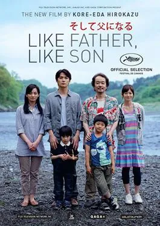

The genetics
The film by Hirokazu Kore-eda is a drama about whether a family is made by blood or by time spent together. DNA testing is the trigger: genetic tests prove that two boys were switched at birth, and the families must decide whether to keep the children they have raised for six years or exchange them for the sake of blood lineage. The film gives the heredity side to Ryōta, a demanding father who believes that his affinities with his biological son will become ever more evident; the bonds built through upbringing are represented by the warm, unambitious Saikis and by the boys' own grief when they are separated. Ryōta's change of heart, prompted by evidence of Keita's love, shows the film favouring nurture. The scientific element is limited to the paternity tests, which are shown as routine and accurate.
The story
Ryōta Nonomiya, a successful and work-obsessed architect, learns with his wife, Midori, that the hospital where their son Keita was born needs to see them urgently. DNA tests show that Keita is not their biological child: he was switched at birth with Ryūsei, who has been raised by the Saikis, a warm but modest shopkeeping family. The two families meet, begin exchanging the boys for weekends, and sue the hospital; in court, a nurse admits that she switched the babies on purpose out of envy, but she cannot be prosecuted. Ryōta, convinced that blood will tell, even proposes taking both boys, which offends the Saikis. The families finally swap the children permanently, but both boys are unhappy, and Ryūsei runs back to the Saikis. When Ryōta finds photos that Keita secretly took of him, he breaks down, goes to the Saikis' home, apologises to Keita for failing him as a father, and the two families go into the house together.